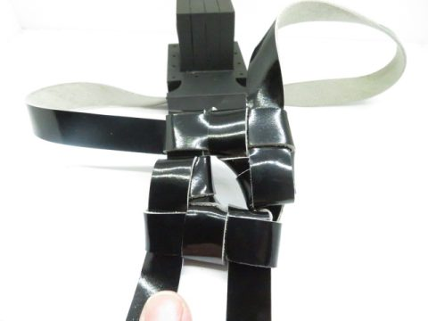
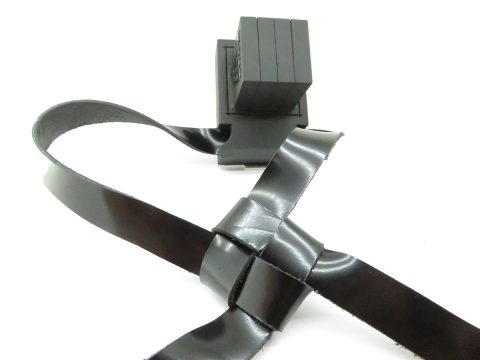
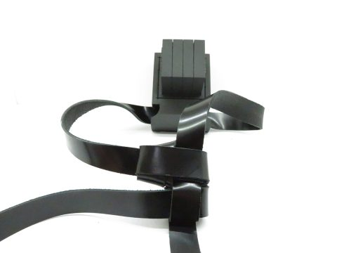
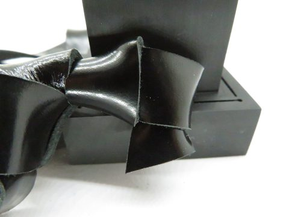
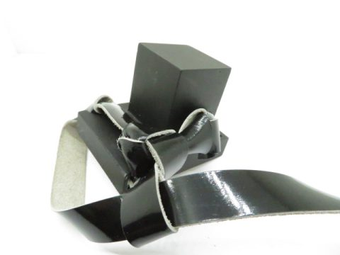
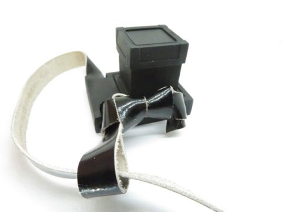
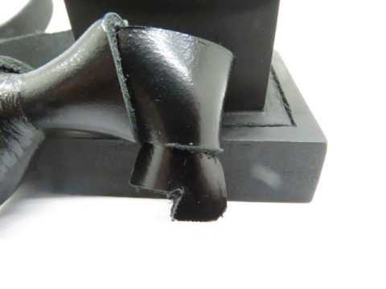
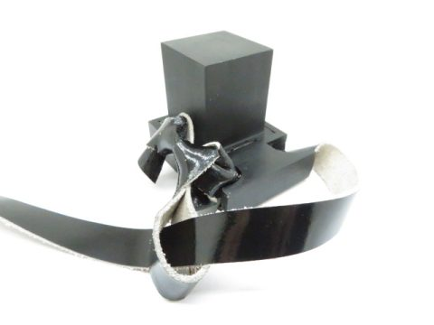
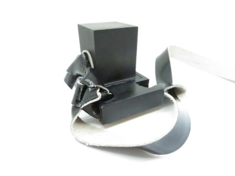

חשיבות ידיעת קשר של תפילין









תלמיד חכם צריך לדעת שלושה דברים – ויש אומרים שישה
שלח הודעה עכשיו לכתובת Y0548431060@GMAIL.COM
בתלמוד נאמר:
אמר רב יהודה בשם רב: תלמיד חכם צריך שילמד שלושה דברים – כתב, שחיטה ומילה (חולין ט.).
ורב חנניה בר שלמיא בשם רב הוסיף שלושה דברים נוספים:
קשר של תפילין, ברכת חתנים וציצית.
הגמרא מסבירה שרב יהודה לא מנה קשר תפילין, ברכת חתנים וציצית מפני שהם מצויים, ולכן הכל בקיאים בהם ואינם צריכים לימוד מיוחד.
המאירי כתב שאף שתלמיד חכם יודע עיקרי הדברים ואינו עוסק במלאכות, יש דברים שראוי לו לאמן ידיו בהם. כגון כתיבה, שתהא חתימתו נאה לדין ולעדות, וכן שידע שחיטה, מילה, קשר תפילין וציצית. וכן ראוי להרגיל עצמו בברכת חתנים ולדעת את נוסחה בעל פה ובעריבות, כי דברים אלו הציבור פונה בהם אל תלמיד חכם, וכשאינו יודע – הבריות מרננות אחריו.
במאמר זה נעסוק בעיקר בידיעת קשר של תפילין, שהוא מן הדברים המרכזיים שתלמיד חכם צריך להכיר היטב.
מהו "כתב" בדברי חז"ל
פירש רש"י ש"כתב" הוא צורת הכתיבה, שידע אדם לכתוב את שמו כאשר ישב בדין או לעדות.
יש שפירשו שהכוונה לידיעה בנוסח השטרות. אחרים פירשו שעל תלמיד חכם להרגיל ידו לכתיבה נאה ומיושרת, כגון כתיבת אגרות או תשובות.
הרש"ש כתב שנראה שהכוונה לכתיבה תמה של ספר תורה תפילין ומזוזות, עם תגיהן וזיוניהן.
המאירי כתב שתהא חתימתו נאה כאשר יושב בדין.
שחיטה ומילה
כתב רש"י ששחיטה פירושה לאמן את היד לכך, אף אם כבר בקי בהלכותיה.
בפסקי הרי"ד כתב שירגיל עצמו בשחיטה כדי שלא יתעלף.
הר"י מלוניל כתב לגבי מילה, שאם יזדמן למקום שאין בו מוהל – יוכל למול.
מדוע לא נזכרו שלושת הדברים האחרים
התוספות פירשו שתפילין וציצית אינם צריכים לימוד מפני שאפשר לקנותם מוכנים, וכן ברכת חתנים מצויים רבים שיודעים לברך.
לעומתם פירשו התוספות במקום אחר שדווקא כתב, שחיטה ומילה מצויים ולכן יש צורך ללמוד אותם בפועל.
נמצא שלדעת רב יהודה אין חובה מיוחדת ללמוד את שלושת הדברים האחרים, אף שהם ראויים לידיעה.
קשר של תפילין הלכה למשה מסיני
נאמר בתורה:
"והסרותי את כפי וראית את אחורי" (שמות לג כג).
אמרו חז"ל: מלמד שהראה הקדוש ברוך הוא למשה קשר של תפילין.
עוד מצינו בגמרא שקשר של תפילין הוא הלכה למשה מסיני.
רש"י פירש שקשר התפילין נעשה בצורת אות דל"ת כדי להשלים את שם ש-ד-י:
השין בבית של ראש, הדל"ת בקשר של ראש, והיו"ד בקשר של יד.
הרמב"ם כתב:
שמונה הלכות יש במעשה התפילין כולן למשה מסיני ואם שינה באחת מהן פסל, ומהן שיהיה הקשר קשר ידוע בצורת דל"ת.
ובמקום אחר כתב שקשר זה צריך כל תלמיד חכם ללמדו, ואי אפשר להודיע צורתו בכתב אלא בראיית העין.
הלכה למעשה
פסק השולחן ערוך:
יכניס הרצועה תוך המעברתא ויעשה קשר כמין דל"ת בשל ראש וכמין יו"ד בשל יד להשלים אותיות ש-ד-י עם השי"ן שבבית של ראש.
עוד פסק שתהא הדל"ת שבקשר מופנית לצד חוץ.
מסורות הקשר
צורת הקשר היא מסורת העוברת מדור לדור, ואלו ואלו דברי אלוקים חיים.
קשר של ראש
מנהג בני אשכנז ועדות המזרח לעשות קשר בצורת אות דל"ת.
יש שנהגו לעשות קשר הנראה כמ"ם סתומה, הנראה כשני דלתי"ן משני צדדיו.
יש גם קשר נוסף הנקרא קשר צאנז, כמ"ם סתומה עם חלל בפנים.
כל אחד יעשה כמנהג אבותיו.
יש פוסקים שהעדיפו קשר דל"ת פשוט, ויש שהביאו מסורות אחרות על פי הקבלה והמנהג.
קשר של יד
היו"ד נמצאת תמיד בצד הלב.
אולם נחלקו המנהגים היכן יוצאת הלולאה:
יש שנוהגים שתצא לצד הלב במקום הקשר כמנהג אשכנז.
ויש שנוהגים שתצא לצד חוץ כמנהג עדות המזרח וספרד.
יש שכתבו שמנהג זה עדיף מפני שבכך היו"ד אינה נפרדת מן הבית, ואחרים העדיפו שהקשר והיו"ד יהיו לצד הלב.
סדר הקשירה
סדר הקשירה הוא:
מכניסים את הרצועה בתוך המעברתא
עושים קשר כמין דל"ת בשל ראש
וקשר כמין יו"ד בשל יד
כדי להשלים שם ש-ד-י עם השי"ן שבבית של ראש.
חשיבות ידיעת קשר של תפילין
קשר של תפילין הוא מן הדברים שתלמיד חכם צריך לדעת בפועל. לא די בידיעת ההלכה בלבד, אלא יש צורך בידיעה מעשית ובהבנה של צורת הקשר.
הרמב"ם כבר הדגיש שאין אפשרות ללמד את צורת הקשר בכתב בלבד, אלא יש צורך בראיית העין ובהדרכה מעשית.
משום כך ראוי לכל תלמיד חכם ולכל העוסק במצוות תפילין להכיר היטב את מבנה הקשר, צורת האותיות והמסורות השונות, כדי לקיים את המצווה בשלמות ובהידור.